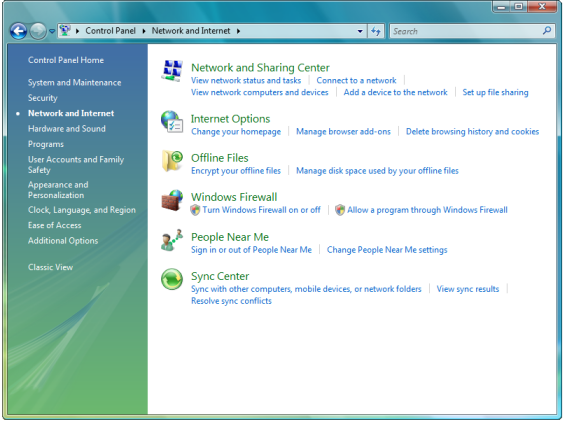

Check your network connection - Windows Vista
To check the status of your local area connection, follow the steps below.
-
From your desktop, click on Start and select Control Panel.
-
From the Control Panel window, select Network and Internet.

-
Select Network and Sharing Center.
 -
In the Network Sharing Center window, click on Manage network connections on the left. A yellow triangle displayed on this screen indicates that there is no connectivity.
-
In the Network Connections window, look for the Local Area Connection icon.
-
If the Local Area Connection icon shows 'Identifying', as shown in the screen above, continue to step 7 to change your IP settings to a manual configuration.
- If the Local Area Connection icon does not show 'Identifying', this means you are successfully connected to the Sky wireless router. If you are still experiencing connection problems, check your web browser's connection settings.
-
To manually configure your IP settings, right-click on the Local Area Connection icon in the Network Connections window, then click on Properties at the bottom of the menu.
-
In the Local Area Connection Properties window, scroll down in the window 'This connection uses the following items' until you see Internet Protocol Version 4 (TCP/IPv4) - click this once, then select Properties.
-
In the Internet Protocol Version 4 (TCP/IPv4) window:
- Select Use the following IP address
- Set the IP address to: 192.168.0.X (where X must be a number of your choice between 2 and 254 and should be unique for each PC connecting to the Sky wireless router)
- Set the Subnet mask to 255.255.255.0
- Set the Default gateway as 192.168.0.1
- Select Use the following DNS server addresses
- Set the Preferred DNS server to 192.168.0.1
- Leave the Alternate DNS server blank
- Once completed, the details should look similar to the image below. Click OK
-
Click OK again in the Local Area Connection Properties window.
-
Restart your computer and open a web browser to check if you can now browse the web using your broadband service.